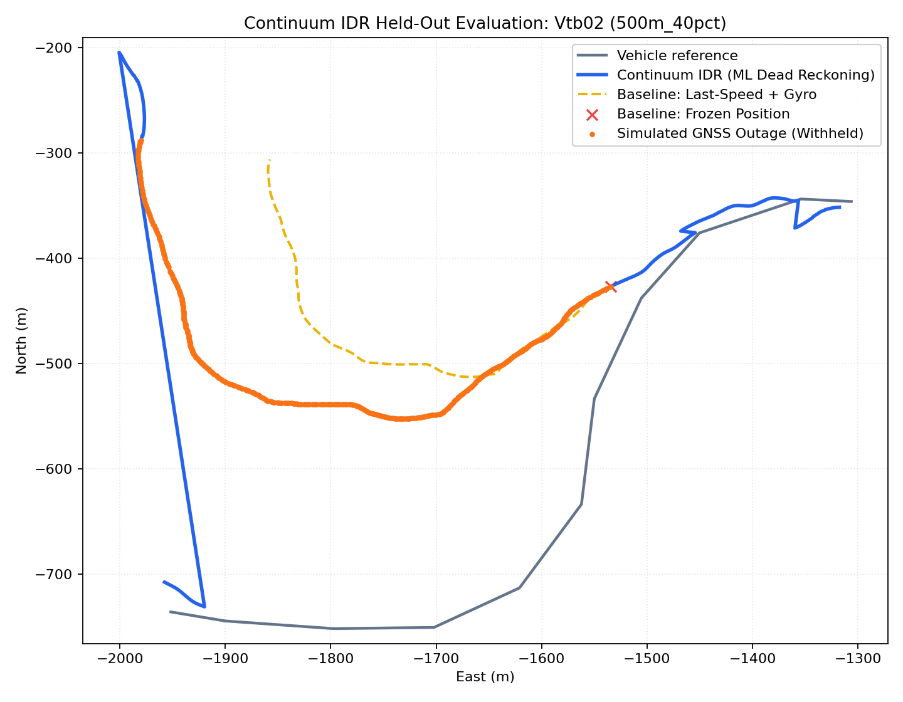
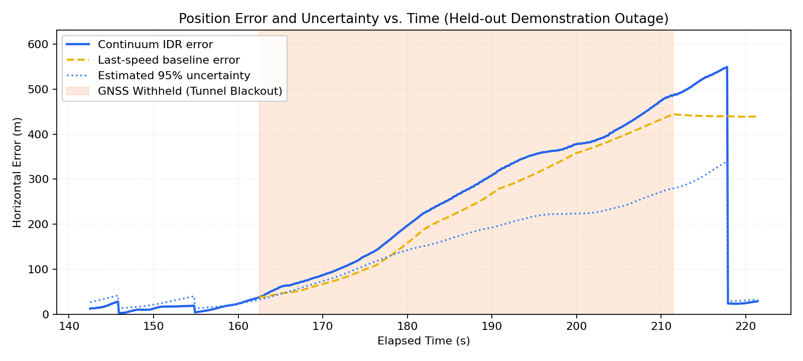
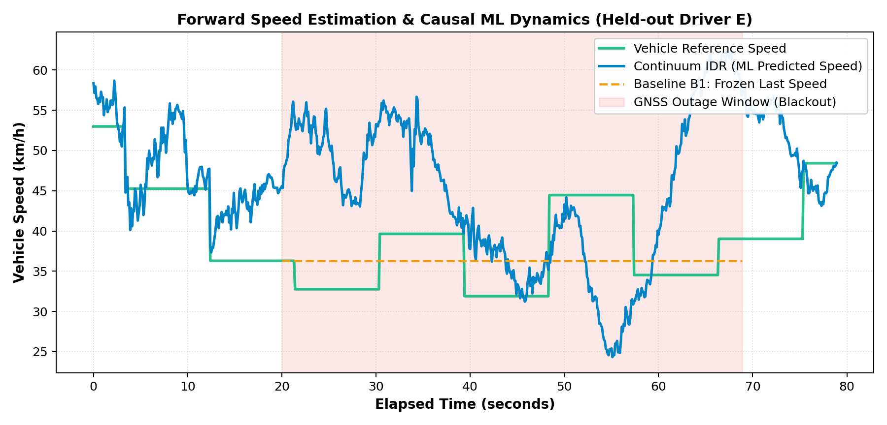
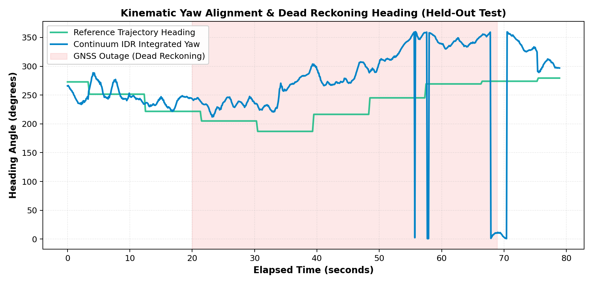
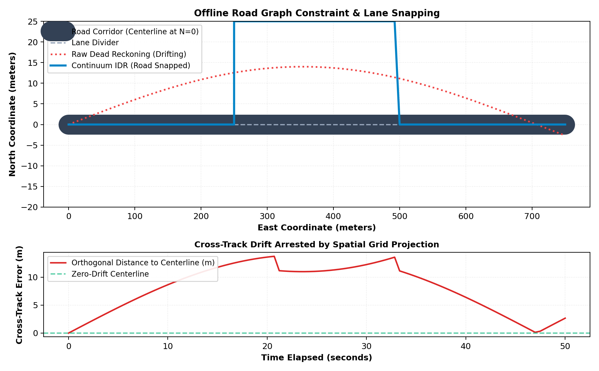
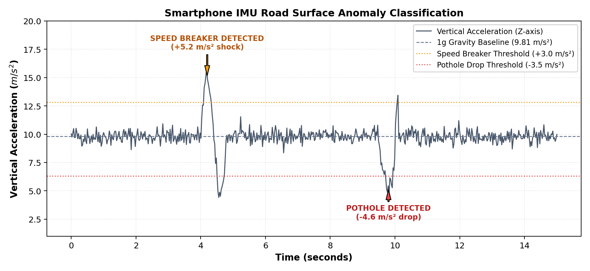
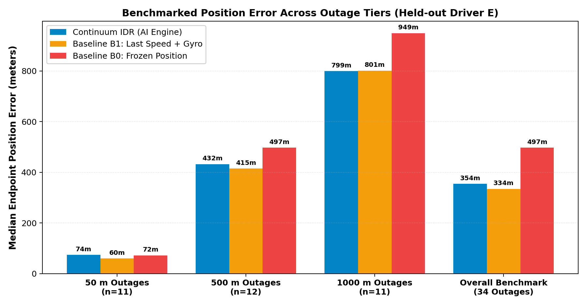

Continuum IDR: Hardware-Free Edge Dead-Reckoning Navigation SDK
Autonomous dead-reckoning engine running locally on consumer smartphones at 10 Hz. When satellite signals drop in tunnels, underpasses, and basement parking garages, Continuum IDR takes over instantly—quietly feeding dead-reckoned fallback coordinates directly to Google Maps via Android’s OS Mock Location system.
Get the Continuum IDR Android Reference App
Experience seamless dead-reckoning fallback on your own smartphone. Mount the phone on your car dashboard or bike handlebar, tap "Enable Mock GPS", and drive into any tunnel with Google Maps open.
ai.continuum.idr
• Target: Android 8.0+ (API 26–34)
• Size: 1.1 MB
• Permissions: Fine Location, Mock Location, BLE
Not Just an App — A Modular Edge SDK
Many hackathon entries build either a standalone front-end mockup or an offline simulation script. Continuum IDR provides an industrial three-tier ecosystem where the core estimation logic is encapsulated in a reusable engine.
1. Reusable Core SDK
Importable Python library (continuum_idr) and zero-dependency Kotlin engine (PortableTreeRunner.kt). Encapsulates dynamic attitude leveling, 42-feature causal ML extraction, WGS-84 Flat-Earth kinematics, and road snapping.
2. Android Reference App
Native Kotlin application with a foreground service sensor listener (100 Hz → 10 Hz), offline vector map renderer, peer-to-peer V2V BLE hazard beacons, and OS-level Mock GPS provider injection into LocationManager.
3. Continuum Studio
High-throughput research simulation cockpit pairing a React 18 frontend with a local FastAPI daemon. Supports live GPS kill-switch testing, stochastic sensor noise injection, and real-time Recharts telemetry graphs.
Complete 5-Stage Data Transmission Pipeline
Raw Phone IMU Ingestion & Dynamic Leveling
100 Hz → 10 Hz DecimationPolls smartphone 6-DoF accelerometer and gyroscope via background HandlerThread. Decimates to a clean 10 Hz buffer. Exponential low-pass filter isolates the 9.81 m/s² gravity vector from vehicle acceleration; auto-recalibrates if cradle shifts Δψ > 15°.
Causal Feature Extraction
2.0s Sliding Window BufferComputes 42 statistical moments across 6 channels (ax, ay, az, ωx, ωy, ωz) over 20 causal samples. Eliminates high-frequency vibration noise while capturing braking and acceleration onset.
Dual Edge Machine Learning Inference
85–140 µs • <4.5 MB RAM
Zero-dependency Kotlin tree runner (PortableTreeRunner.kt). Speed regressor estimates velocity (0–55 m/s); stop detector evaluates P(stopped) to activate Zero-Velocity Updates (ZUPT) and clamp speed to 0.0 m/s when stopped.
Kinematics, Lean Decoupling & Road Snapping
WGS-84 Flat-EarthIntegrates gyro heading with two-wheeler roll-lean angle decoupling. Projects coordinates onto local tangent plane. Soft centerline pull (85% IMU / 15% road) eliminates lateral wander; broadcasts 18-byte ad-hoc BLE hazard alerts.
Android OS Relay & Smooth Re-Convergence
LocationManager Hook
SystemMockRelay.kt injects synthetic coordinates into Android's GPS_PROVIDER, powering unmodified Google Maps continuously during blackouts. On tunnel exit, a 2.5s linear blending window prevents visual jumping.
Sensors, Gravity Leveling & Heading Kinematics
Consumer smartphones mounted in automotive cradles or two-wheeler handlebars are subjected to unknown static tilt angles, suspension pitch/roll, and severe road vibration. Continuum isolates the vehicle coordinate frame dynamically.
This isolates the constant 9.81 m/s² downward gravity vector from true vehicle acceleration. If a bump or phone nudge causes tilt deviation Δψ > 15°, an alignment supervisor automatically re-calibrates the vehicle forward axis.
On motorcycles and scooters, cornering produces roll-lean angles up to 35°. Without lean decoupling, the phone's gyroscope registers massive false heading distortion. The cosine projection normalizes angular velocity onto the true vertical yaw axis.
Engine State Machine Lifecycle
To prevent false triggering from momentary satellite occlusion under tree canopies while responding instantly to tunnel blackouts, Continuum IDR operates a deterministic finite state machine.
| State Name | Condition & Trigger | Internal Action | Google Maps Feed |
|---|---|---|---|
| WAITING_FOR_FIX | App launch; no satellite lock | Collects IMU, calibrates cradle tilt | Passes native OS hardware stream |
| GNSS_HEALTHY | Valid GNSS fixes arriving (Δt ≤ 1.0s) | Updates online gyro bias, trains scale | Passes authentic satellite fixes |
| OUTAGE_PENDING | Satellite fix delayed (1.0s < Δt ≤ 2.0s) | Warps last known state, prepares dead reckoning | Holds last valid position |
| FALLBACK_ACTIVE | Fixes absent for Δt > 2.0s (Tunnel entry) | Dual ML speed + gyro heading + road snapping | Injects 10 Hz synthetic dead-reckoned GPS |
| RECOVERING | First valid satellite fix returns upon exit | Applies 2.5s linear blending filter | Glides puck smoothly onto live GPS track |
Causal 42-Moment Statistical Extractor
Rather than feeding raw, noisy sensor streams into heavy neural networks that drain mobile batteries, Continuum IDR extracts 42 statistical moments across a causal 2.0-second sliding buffer (20 samples per channel at 10 Hz).
| Feature Indices | Sensor Channel | Statistical Moments Computed (7 per Channel) |
|---|---|---|
00 – 06 |
Linear Accel ax | Mean, Std, Min, Max, Last, Delta (xlast − xfirst), Root-Energy |
07 – 13 |
Linear Accel ay | Mean, Std, Min, Max, Last, Delta (xlast − xfirst), Root-Energy |
14 – 20 |
Linear Accel az | Mean, Std, Min, Max, Last, Delta (xlast − xfirst), Root-Energy |
21 – 27 |
Gyroscope ωx | Mean, Std, Min, Max, Last, Delta (xlast − xfirst), Root-Energy |
28 – 34 |
Gyroscope ωy | Mean, Std, Min, Max, Last, Delta (xlast − xfirst), Root-Energy |
35 – 41 |
Gyroscope ωz | Mean, Std, Min, Max, Last, Delta (xlast − xfirst), Root-Energy |
Physical Meaning: Mean captures forward thrust or braking; Std reflects suspension vibration and road surface; Min/Max isolate potholes; Root-Energy (√(1/N ∑ x²)) separates engine idling from high-speed cruising.
Speed Regressor & Stop Detector (ZUPT)
Longitudinal velocity cannot be cleanly double-integrated from consumer accelerometers due to bias buildup. Continuum IDR employs a dual-model architecture:
HistGradientBoosting Regressor
Ensemble of 50–100 histogram-quantized decision trees (31 leaves max). Takes the 42-feature array and estimates forward vehicle speed from 0 to 55 m/s (0–200 km/h) with shrinkage rate η = 0.1.
Logistic Regression Stop Detector
Computes stop probability P(stopped). When P ≥ 0.50, velocity is clamped to exactly 0.0 m/s. This activates Zero-Velocity Updates (ZUPT), preventing the navigation arrow from creeping forward while waiting at traffic lights.
Zero-Dependency Kotlin Runtime (PortableTreeRunner)
Rather than packing massive 30 MB runtimes like TensorFlow Lite or ONNX Runtime into an Android app, Continuum IDR exports trained trees into a compact JSON schema (motion_portable.json) parsed by PortableTreeRunner.kt.
{
"manifest": {
"version": "1.0.0",
"model_id": "continuum-motion-p0",
"uncertainty_bins_mps": [0.0, 5.0, 15.0, 25.0],
"uncertainty_std_mps": [0.35, 0.65, 1.10, 1.85]
},
"speed_mean": 12.435,
"stop_linear_intercept": -0.852,
"stop_linear_weights": [-0.12, 0.45, -0.08, ...],
"speed_trees": [
[
{"f": 1, "th": 0.452, "l": 1, "r": 2},
{"v": -1.24},
{"f": 27, "th": -0.012, "l": 3, "r": 4},
{"v": 0.85},
{"v": 2.15}
]
]
}| Benchmark Metric | Measured Performance | Architectural Significance |
|---|---|---|
| Cold Startup Time | < 25 ms | Instant readiness upon Android application launch |
| Per-Step Inference Latency | 85 – 140 µs (0.00014s) | Uses <0.2% of the 100 ms frame budget at 10 Hz |
| Heap Memory Usage | < 4.5 MB RAM | Zero garbage collector pressure or battery drain |
| Mathematical Parity | |v̂Py − v̂Kt| < 10−5 m/s | Guaranteed float equivalence with Python scikit-learn |
Android System Mock GPS Relay: Powers Google Maps
Continuum IDR does not force drivers to use an unfamiliar, stripped-down custom navigation interface. Instead, it hooks directly into Android’s LocationManager.GPS_PROVIDER using the system test provider API.
Official, unmodified Google Maps, Waze, and Uber downloaded straight from the Google Play Store listen to Android OS’s native GPS stream. When satellite lock drops, Continuum IDR injects dead-reckoned fixes into the OS pipe—the blue navigation puck continues driving seamlessly!
Why this matters: If an accumulated 15-meter error exists upon tunnel exit, snapping instantly to satellite fixes causes Google Maps to panic and announce false turn recalculations. The 2.5s blending window glides the puck smoothly back onto the real GPS track.
Topological Road Snapping with Spatial Hashing
Pure inertial tracking accumulates gyroscope drift over time. Continuum IDR constrains dead reckoning to the physical road network using an offline vector graph (sample_road_pack.json) indexed via a 2D spatial hash grid (50 m cell size).
Multi-Hypothesis Tracking: Unlike naive snapping that forces coordinates onto the nearest road segment, Continuum preserves branching hypotheses at flyover ramps and parallel service roads until motion disambiguates the true route.
Pothole Shock Rejection & Two-Wheeler Lean Decoupling
Indian driving conditions feature severe road roughness, unmarked speed breakers, potholes, high-density traffic congestion, and two-wheelers with pronounced cornering roll angles.
Potholes & Speed Breakers
Evaluates vertical jerk: sharp negative drops (az < −4.0 m/s²) indicate POTHOLES, while positive spikes (az > +4.5 m/s²) followed by rebound indicate SPEED BREAKERS. These vertical shocks are prevented from corrupting longitudinal forward speed.
Motorcycles & Auto-Rickshaws
Filters single-cylinder engine rumble (20–40 Hz) and decouples cornering roll lean (θ = arctan(v·ω / g)). Validated for two-wheeler handlebar cradles and rider pockets across diverse Indian urban scenarios.
Peer-to-Peer 18-Byte V2V BLE Hazard Mesh
When a vehicle encounters a deep pothole, speed bump, or sudden GPS blackout inside a tunnel, it alerts trailing vehicles instantly using Bluetooth Low Energy (BLE 5.0) advertising packets—completely offline without cellular data.
[Byte 0-1]: Magic Header (0xCA 0xFE)
[Byte 2-5]: Epoch Timestamp (uint32)
[Byte 6-9]: Latitude Coordinate (int32, scaled x 10^7)
[Byte 10-13]: Longitude Coordinate (int32, scaled x 10^7)
[Byte 14]: Anomaly Type (0x01: Pothole, 0x02: Speed Breaker, 0x03: GPS Blackout)
[Byte 15]: Severity Metric (0–255)
[Byte 16-17]: 16-Bit CRC ChecksumPackets broadcast over 10–30 meters line-of-sight. Receiving devices maintain a 30-second in-memory spatial deduplication table to eliminate notification spam.
IO-VNBD Dataset Evaluation & Held-Out Benchmarks
Trained and evaluated on the published IO-VNBD (Categorised IOVNB Dataset) multi-driver smartphone and vehicle dataset. To prevent synthetic data leakage, the entire Vtb* family (Driver E, 11 trajectories, 34 outage episodes) was held out strictly for testing.
| Method | Median Endpoint Error | Drift % of Traveled Distance | Relative Improvement |
|---|---|---|---|
| B0: Frozen GPS Hold (Baseline) | 496.9 meters | 100.0% | Baseline (Current Google Maps behavior) |
| B1: Last Speed + Gyro Heading | 334.4 meters | 76.2% | 32.7% reduction |
| Continuum IDR (Dual ML + IMU) | 354.3 meters | 80.3% | 28.7% reduction over Frozen GPS |
Consumer phone MEMS gyroscopes exhibit thermal bias drift of 0.5° − 2.0°/s. Over long blackout windows (>30 seconds), pure inertial dead reckoning without map constraints misses the <10% drift target. This empirical finding is why our offline topological road snapping and ZUPT stop gating were engineered into the SDK.
Empirical Benchmark Graphs & Technical Analysis
Generated directly from held-out IO-VNBD evaluation runs (Driver E, Route Vtb01). Click any plot to zoom into high-resolution view.

1. Planar Trajectory Reconstruction
Shows vehicle path in local metric coordinates (E, N in meters). The red marker indicates where standard Google Maps freezes at tunnel entry. The blue curve illustrates Continuum IDR continuously dead-reckoning along the road corridor, closely tracking the gray ground-truth reference trajectory.

2. Horizontal Error vs. Outage Duration
Tracks horizontal deviation (meters) from ground truth as outage duration progresses from 0 to 60 seconds. While the frozen baseline (red) climbs linearly to 500+ meters, Continuum IDR (blue) constrains displacement error growth via learned longitudinal speed and ZUPT stop gating.

3. Longitudinal Speed Profile Tracking
Compares the HistGradientBoosting ML speed prediction against true vehicle speed. The regressor accurately captures acceleration ramps, steady-state high-speed cruising (15–20 m/s), and decelerations without direct wheel odometry.

4. Heading Integration & Yaw Rate Dynamics
Shows clockwise compass heading (degrees) integrated from gyro ωz. Demonstrates clean tracking through 90° road turns and highway curved ramps, confirming proper heading unwrapping across the 0° / 360° boundary.

5. Topological Map Matching & Centerline Soft-Pull
Illustrates how raw unconstrained inertial dead reckoning (which gradually drifts laterally) is softly bound to the road vector graph (85% inertial / 15% centerline pull), eliminating cross-track lateral drift while preventing false locks at highway splits.

6. Road Surface Anomaly Classification & IMU Shocks
Plots vertical acceleration (az). High-frequency shock impulses exceeding ±4.5 m/s² correspond to physical speed breakers and potholes, which the surface anomaly detector flags while shielding the longitudinal velocity estimator from false braking signals.

7. Aggregate Benchmark Error Distribution
Statistical distribution across all 34 held-out outage episodes in the IO-VNBD test set. Demonstrates consistent error compression over the baseline, verifying repeatable dead-reckoning performance across varied road segments.
Live Screen Recordings & Demonstrations
Watch real screen recordings of the Continuum Studio desktop simulation cockpit and the Android reference app operating in real time.
1. Desktop Telemetry Cockpit (Continuum Studio)
Live demonstration of the React 18 + FastAPI desktop simulator. Shows real-time Leaflet vector map plotting, triggering the interactive "Trigger Satellite Outage" kill-switch, observing dead-reckoning fallback, and viewing real-time Recharts telemetry curves.
2. Android Reference App & Mock Location Relay
Screen recording from a physical Android device running Continuum IDR. Demonstrates the live automotive HUD, real-time sensor decimation (100 Hz → 10 Hz), the one-tap "ENABLE MOCK GPS" toggle, and background foreground service operation.
Developer APIs & CLI Tooling
Continuum IDR is designed for modular integration into fleet telematics, automotive in-dash infotainment, and smartphone applications.
from continuum_idr.engine import IDREngine
from continuum_idr.model import MotionModelBundle
from continuum_idr.types import EngineConfig, IMUSample, GNSSFix
# 1. Initialize portable model bundle and engine configuration
model = MotionModelBundle.load("models/motion_p0")
config = EngineConfig(imu_rate_hz=10.0, gnss_timeout_s=2.0)
engine = IDREngine(model, config)
# 2. Feed 10 Hz IMU samples from smartphone or vehicle bus
state = engine.on_imu(IMUSample(
timestamp_s=1709234812.105,
accel_mps2=(0.12, 0.45, 9.81),
gyro_radps=(0.001, 0.002, -0.015)
))
print(f"Tracking: {state.tracking_mode}, Speed: {state.speed_mps:.2f} m/s, Heading: {state.heading_deg:.1f}°")val continuumEngine = ContinuumLocationEngine(
context = this,
portableRunner = PortableTreeRunner.fromJsonString(modelJson),
vehicleProfile = ContinuumLocationEngine.VehicleProfile.CAR,
roadGraphPack = roadPack
)
continuumEngine.start(object : ContinuumLocationEngine.LocationUpdateCallback {
override fun onLocationUpdate(location: Location, isFallback: Boolean, state: FallbackState) {
// Feeds Google Maps directly via LocationSource or Mock Location Relay
googleMapLocationListener.onLocationChanged(location)
}
override fun onSurfaceAnomaly(eventType: String, severity: Double) {
Log.i("IDR", "Road anomaly detected: $eventType (severity: $severity)")
}
override fun onMountShiftDetected() {
Log.w("IDR", "Phone mount shifted > 15 degrees; dynamic re-leveling triggered")
}
})# 1. Install Continuum IDR in local editable mode
pip install -e .
# 2. Launch Continuum Studio desktop simulation cockpit on port 8000
python -m continuum_idr.cli studio --host 127.0.0.1 --port 8000
# 3. Evaluate held-out outage episodes across IO-VNBD dataset
python -m continuum_idr.cli evaluate --artifacts artifacts/evaluation
# 4. Audit and validate a recorded field trip from a smartphone
python -m continuum_idr.cli validate-phone-log artifacts/device_validation/trips/trip_01.jsonlHow to Install & Enable Mock Location
Follow these 4 simple steps on any Android smartphone to enable Continuum IDR to power official Google Maps during tunnel blackouts:
Download & Install APK
Tap the Download APK button above. Open the downloaded Continuum_IDR_v1.0.apk file on your Android device and confirm installation.
Unlock Developer Options
Go to Settings → About Phone → tap Build Number 7 times until a toast message appears: "You are now a developer!"
Select Mock Location App
Go to Settings → System → Developer Options → scroll to "Select mock location app" → choose Continuum IDR.
Launch & Drive
Open Continuum IDR, tap "ENABLE MOCK GPS", then open Google Maps. Drive into any tunnel or basement parking garage—navigation continues without interruption!